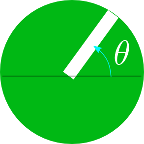

これは、波の「位相」を理解するためのアニメーションである。説明はプログラムの下の方にある。
振動数ν= 角振動数ω= 波数k= 速度v=
 グラフの下に並んでいるの白い棒がその場所、その時刻で位相を表現している。
位相の式を見ると、位相は「位置座標xが増加すると増え、時間tが増加すると減る」ようになっている。実際に上のアニメーションがそのようになっていること、つまり「右に行くほど位相（図のθ）が増え、時間が経つほど位相が減る」という変化をしていることを確認しよう。
回転を表現する時、反時計回りを「プラスの回転」と取るので、位相が増えると反時計回りに回るようになっている。今の場合、時間が経つと位相が減るので、各々のは時計回りに回っている。
プログラムでは波長と周期を変化させることができるようになっているので、それぞれを変化させながら波の運動の様子を見よう。
波が「山」になっているところは、位相が(π/2)または、(π/2)+2π,(π/2)+4π,…のように、「θ=(π/2)+2nπ」という形で表されるところである。
上にあるθ=(π/2)+2nπの点（山）をマークというボックスをチェックすると、「山」である「θ=(π/2)+2nπの点」にマークが現れる（もう一回押すとマークは消える）。
「波が山になっている」ということと、「波の位相が(π/2)+2nπになっている」というのは同じ意味である。しかし「山」とか「谷」に比べて、「位相」という言葉を使うと、
のような中途半端な状態（この状態は、もう少しで位相が(4π/8)=π/2になるから、「もう少しで山」という状態である）も表現できる。
同様にいろんな位相の点のマークをON/OFFできるので、やってみよう。